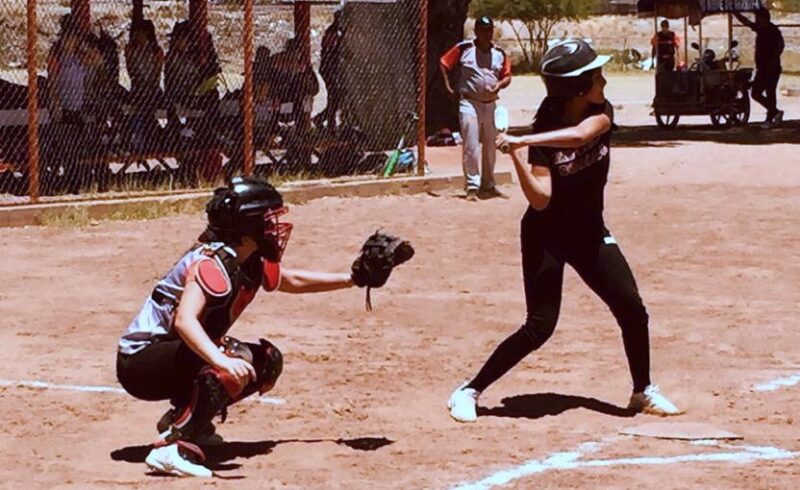
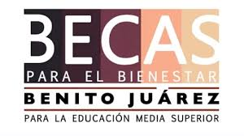

COBACH 26
COBACH 26| INICIO | NOTICIAS |
COBACH 26
|  | Culminan con éxito los Juegos Deportivos Estudiantiles del Cobach Los Juegos Deportivos del Cobach se llevaron a cabo en los campos de la Liga Kino y Luis Flores, pista del estadio Héroes de Nacozari del CUM, campo La Sauceda, Gimnasio Multifuncional del Cobach, biblioteca del plantel Villa de Seris y la recientemente inaugurada Unidad Polideportiva contigua al plantel Villa de Seris. Los Juegos Deportivos del Cobach se llevaron a cabo en los campos de la Liga Kino y Luis Flores, pista del estadio Héroes de Nacozari del CUM, campo La Sauceda, Gimnasio Multifuncional del Cobach, biblioteca del plantel Villa de Seris y la recientemente inaugurada Unidad Polideportiva contigua al plantel Villa de Seris. |
|  | Llegan primeras fechas de las becas para el bienestar El pasado jueves 9 de Mayo, se hizo oficial la entrega de mas de 500 becas para los alumnos del COBACH 26, entre alumnos del turno vespertino y matutino, en un horario de las 8 AM hasta la 1 PM |
Reportan en COBACH 01 como favoritismo para entrega de becas federales
|